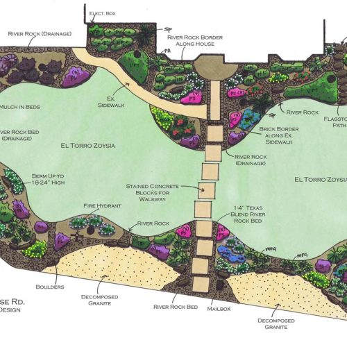
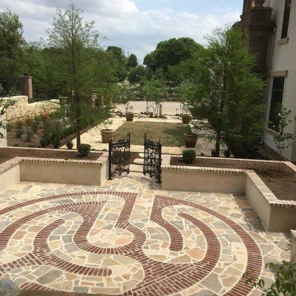
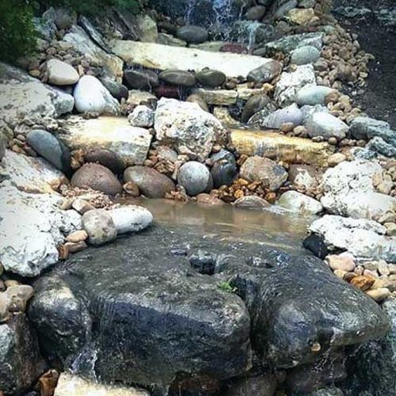
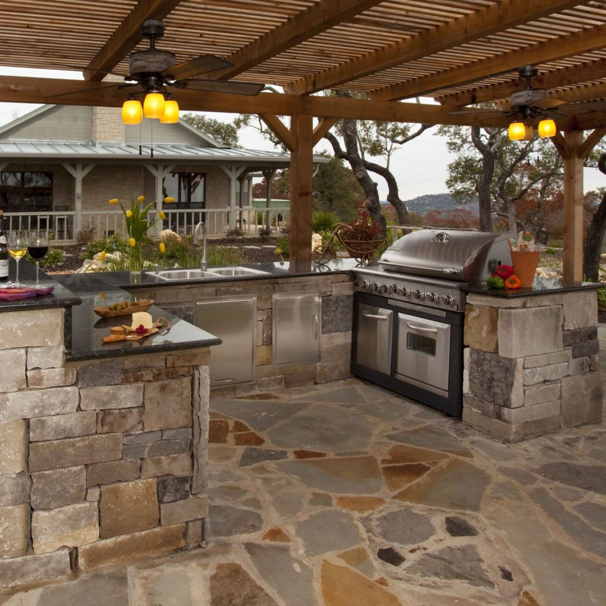
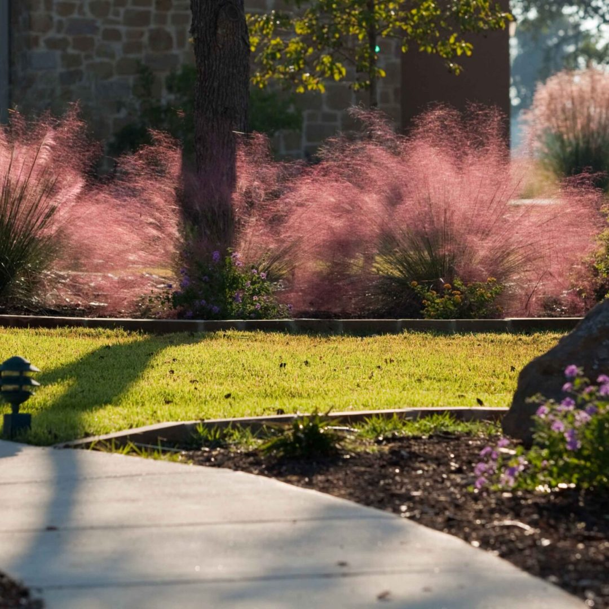

01San Antonio’s landscape transformation experts
Designed for life.
Built to thrive.
Thoughtful landscape design and masterful construction—created for the way you want to live outside.
Since 2006Serving San Antonio
The Pristine difference
Your outdoors should feel
as good as home.
A great landscape is more than beautiful. It welcomes you outside, works with the way you live and gets better with time.
Led by a licensed landscape architect, our team brings every detail together—from the first sketch to the final stone.
Plan your transformation →Full-service outdoor transformations
One team. Every detail.
One beautiful result.
Custom environments designed and built for lasting enjoyment.

02
03
04
A landscape made
to live beautifully.
to live beautifully.
Expertise from concept to completion
We see the whole
picture.
Outdoor spaces work best when every element belongs. Our landscape architect considers flow, scale, materials, drainage, planting and the realities of the Texas climate as one cohesive design.
- 01True design expertiseLed by a licensed landscape architect—not a salesperson with a clipboard.
- 02Master craftsmen on siteExperienced crews who care about every line, joint and planting.
- 03Built to last in TexasMaterials and plants chosen to thrive here for years to come.
20Years serving
San Antonio
San Antonio
1Expert team from
design to build
design to build
5★Google-reviewed
local service
local service
100%Focused on lasting
customer value
customer value
Kind words, beautiful spaces
What our clients
are saying.
G5-star experiencesPublished Google reviews
★★★★★
An excellent landscaping group! We are so happy with the results of a beautiful design, responsibly executed and incredibly easy to work with. I would recommend this landscaping team all day long. They did exactly what we wanted, communicated well and are all very talented. I can’t say enough good things about this company.
★★★★★
Pristine Landscaping is one of our clients, it's always a pleasure to work with them on their projects, VaVia Dumpsters
★★★★★
We had such a great experience working with this landscaping company! Greg and his team were amazing from start to finish—friendly, professional, and so easy to work with. Greg came up with a beautiful design that fit perfectly within our budget and was always willing to adjust and accommodate as needed. He’s been incredibly supportive with any questions we’ve had and quick to check in, which made the whole process stress-free and enjoyable. The project was completed quickly with minimal disruption, and the results are absolutely stunning. Our yard looks gorgeous—the plant choices are perfect, the rock color ties everything together beautifully, and the overall design turned out even better than we imagined. You can tell the entire crew takes real pride in their work; they were respectful, hardworking, and detail-oriented throughout the process. We couldn’t be happier with how everything turned out and highly recommend this company to anyone looking for thoughtful design, great communication, and exceptional results.
★★★★★
We are repeat customers. Gregg, Manuel and their crew did a great job with our chopped block, mulching and planting of flowers. We give this company 5 stars again for excellent service. A++
★★★★★
So many compliments! We absolutely love our new landscaping! Pristine listened to our vision and not only did they help bring it to life, they made it even better. The company was very professional, on time and cleaned up daily. There was great communication throughout the process. Where we once had a shady spot where nothing would grow, there is now a lovely paver patio. The yard is full of lovely native plants. We couldn’t be more pleased and we have had so many compliments about our yard. We highly recommend Pristine Landscaping.
★★★★★
Pristine Landscaping did a beautiful job! Owner Gregg was excellent and informative with all aspects of this project. I knew what I wanted to add in the back yard but knew very little about the plants, landscaping throughout the yard. I now have an orchard, pollinator garden, area for swing set and they poured a slab for my gazebo. And more! I highly recommend Pristine Landscaping!
★★★★★
The crew that came out to do the work was polite and respectful throughout the process. They worked hard to complete the job and made sure the wall was built solid and sturdy. Communication was prompt, and they showed up as scheduled. I appreciate their efforts and the time they put into finishing the project.
★★★★★
Gregg and his team did an amazing job on our retaining wall around our above ground pool! I would highly recommend!
Simple from start to finish
Your vision. Our process.
A place you’ll love.
Walk & listen
We meet at your property, learn how you want to use it and understand your goals.
Design & define
Our landscape architect develops a thoughtful concept and clear written quote.
Build it right
Our in-house team brings the plan to life and stays until every detail feels right.
Free on-site consultation
Let’s create your
outdoor oasis.
Tell us a little about your project. We’ll be in touch to schedule a relaxed, no-obligation conversation at your property.
Prefer to talk?(210) 625-4368